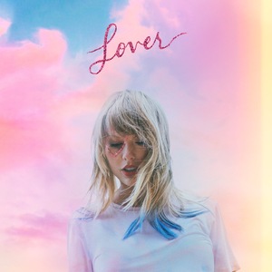

Song by Taylor Swift

We could leave the Christmas lights up 'til January And this is our place, we make the rules And there's a dazzling haze, a mysterious way about you, dear Have I known you 20 seconds or 20 years? Can I go where you go? Can we always be this close forever and ever? And ah, take me out, and take me home You're my, my, my, my Lover We could let our friends crash in the living room This is our place, we make the call And I'm highly suspicious that everyone who sees you wants you I've loved you three summers now, honey, but I want 'em all Can I go where you go? Can we always be this close forever and ever? And ah, take me out, and take me home (forever and ever) You're my, my, my, my Lover Ladies and gentlemen, will you please stand? With every guitar string scar on my hand I take this magnetic force of a man to be my lover My heart's been borrowed and yours has been blue All's well that ends well to end up with you Swear to be overdramatic and true to my lover And you'll save all your dirtiest jokes for me And at every table, I'll save you a seat, lover Can I go where you go? Can we always be this close forever and ever? And ah, take me out, and take me home (forever and ever) You're my, my, my, my Oh, you're my, my, my, my Darling, you're my, my, my, my Lover